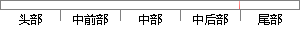

，高斯卷积核 函数 是实现尺度变换的唯一线性核。
片段位置图

相似结果
相似片段：
、亮度变化、旋转不变的特征点，整个算法分为以下几步： 1、 构建尺度空间 这是一个初始化操作，尺度空间理论目的是模拟图像数据的多尺度特征。高斯卷积核是实现尺度变换的唯一线性核，于是一副二维图像的尺度空间定义为： 是空间坐标， 是尺度坐标。大小决定了图像的平滑程度，大尺度对应图像的概貌特征，小尺度对应图像的细
| 对比库： | WriteCheck云资源库 |
| 来源： | blog.sciencenet.cn 查看来源 |
| 发布时间： | 2015-07-06 |
| 相似率 | 87.5% （严重抄袭） |